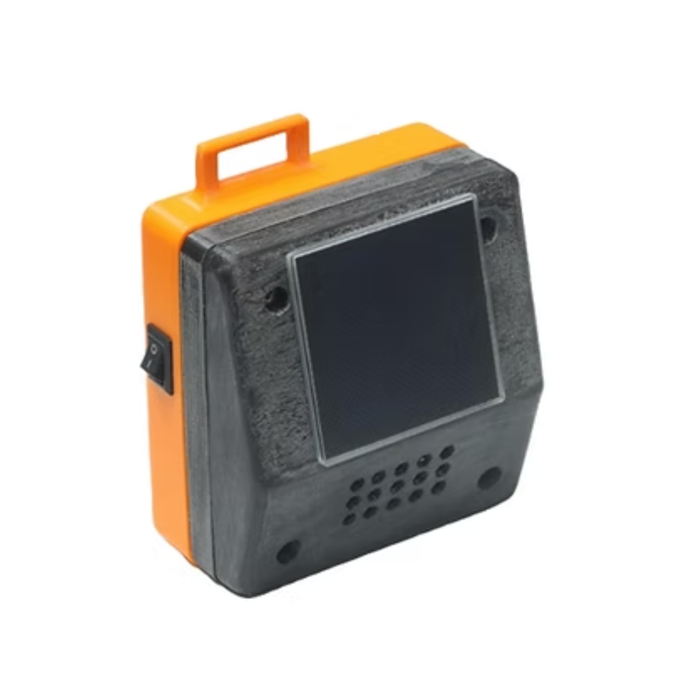
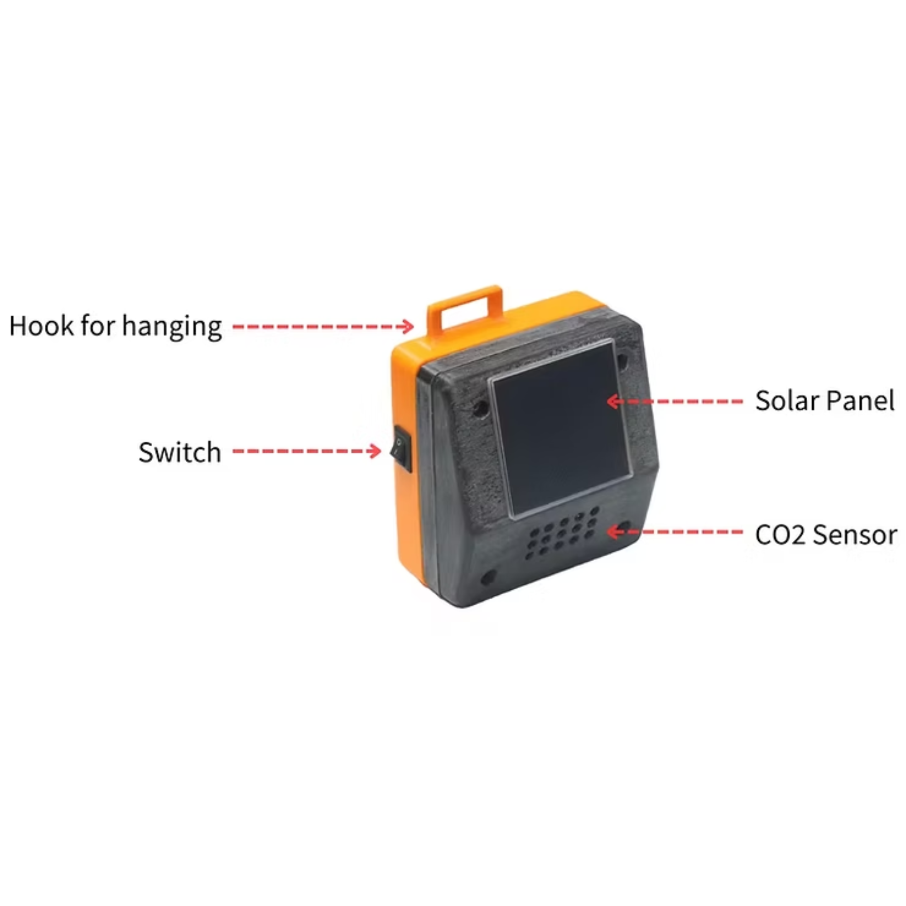

Indoor IoT Infection Risk Monitor with Blues and Qubitro

Monitoring indoor CO2 levels is essential for infection risk management in enclosed environments, especially in the context of the COVID-19 pandemic and other infectious diseases. High CO2 levels are indicative of poor ventilation and overcrowded spaces, which contribute to the spread of respiratory infections. CO2 monitoring helps assess the effectiveness of ventilation systems. Adequate ventilation is crucial for diluting and removing airborne contaminants, including viruses, bacteria, and other pathogens. Monitoring CO2 levels can indicate if the ventilation is sufficient to maintain a healthy indoor environment.
Asymptomatic carriers of infectious diseases can unknowingly spread the virus. CO2 monitoring can help identify spaces where people might be at higher risk due to overcrowding or inadequate ventilation, allowing for targeted interventions to reduce the potential for transmission. Many health organizations, including the CDC and WHO, have recommended maintaining good indoor air quality and ventilation as part of infection control measures. Monitoring CO2 levels can help organizations and building owners ensure compliance with these guidelines.

We opted for a compact and a travel-friendly design for the device. The device comprises a solar panel, a battery, an STM32-based microcontroller, a CO2 sensor, a Blues cellular Notecard, and a Blues Notecarrier A. The Notecarrier is equipped with a built-in solar charger to recharge the battery. The device utilizes cellular networks to transmit data, including the coordinates, to the cloud.